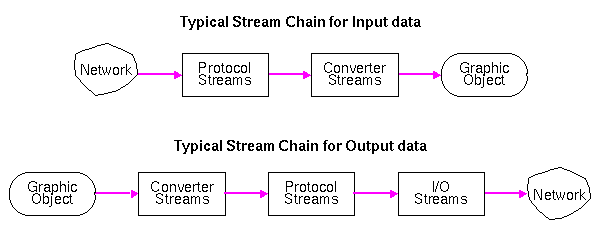
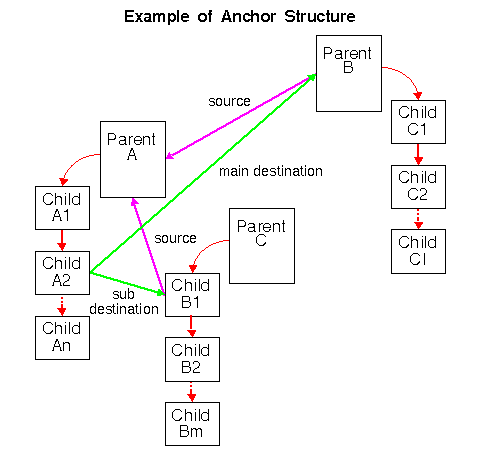
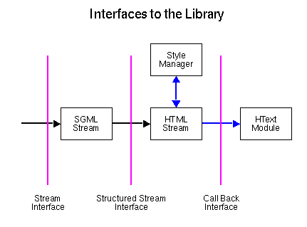

This
paper is still under construction. Comments are welcome at
libwww@w3.org
This
paper is still under construction. Comments are welcome at
libwww@w3.org
The architecture of the W3C Reference Library, a.k.a. Library of Common Code, is both flexible and open which guarantees high usability for many different purposes. This paper describes some important practical aspects of how to use the Library and what is provided through the current API for threads, streams and other basic concepts in the Library. The description contains a set of examples and is based on version 3.1 which is to be released June 1995. It is furthermore the intention that this paper can be used as a basis for discussions on how to improve the API for the W3C Reference Library. For a more detailed discussion on the architecture of the Library and a full listing of the functionality and various class definitions provided, the reader is referred to the Internals and Programmer's Guide and the paper Towards a Uniform Library of Common Code.
The Common Code Library is a general code base that can be used as a basis for building a large variety of World-Wide Web applications. Its main purpose is to provide services to transmit data objects rendered in many different media types either to or from a remote server using the most popular Internet access methods or the local file system. It provides plain C reference implementation of those specifications and is especially designed to be used on a large set of different platforms. Version 3.1 supports more than 20 Unix flavors, VMS, Windows NT, Windows95 and ongoing work is being done to support Power Macintosh platforms.
Even though plain C does not support an object oriented model but merely enables the concept, many of the data structures in the Library are derived from the class notation. This leads to situations where forced type casting is required in order to use a reference to a subclass where a superclass is expected. The forced type casting problem and inheritance in general would be solved if an object oriented programming language was to be used in the Library, but the current standardization and deployment level of object oriented languages in general would imply that a part of the portability would get lost in the transition. There are several intermediate solutions under consideration where one or more object oriented APIs built on top of the Library provides the application programmer with a cleaner interface. However, the purpose of this document if to describe the current API with a large set of practical hints about using and modifying the behavior of the Library.
Many of the features of the Library are demonstrated in the Line Mode Browser which is a simple dumb terminal client built right on top of the Library. Even though this application is usable as an independent Web application, its main purpose is to show a working examples of how the Library can be used. However, it is important to note that the Line Mode Browser is only one way of using the Library and many other applications may want to use it in other ways.
The development of the W3C Reference Library was started by Tim Berners-Lee in 1990, and today the Library is a multifunctional code base with a large amount of knowledge about network programming and portability built into it with help from Ari Luotonen, Jean-Francois Groff, Håkon W. Lie and a a large number of people on the Internet.
Before starting on the design phase of an application, it is advantageous to get an overview of the fundamental concepts of the Library and how it interacts with an application. Largely, it is divided into four different categories of functions as indicated in the figure:

The Library contains many data structures of which most are for internal only and will not normally be referenced directly from outside the Library. However, as the definition of a graphic object is done by the application and not by the Library, a the following figure gives a quick overview of the three most important data structures (or objects) and how they are interconnected.

request structure contains information intended
for the client application, the server application and for the Library
itself for how to fulfill a request. The default values of the structure
are appropiate for a client loadinf a document from either an anchor or a URI.
Managing requests is described in section
The Request Objectanchors is described
in section The Anchor ObjectHyperDoc structure is only declared in the
Library - the definition is left to the client application. For the
Line Mode Browser, it is
defined in the GridText
Module where it is called _HText. It contains all
information needed to present and manage a
graphic object. The client is responsible for allocating and freeing
all graphic objects which may entail tradeoffs of speed
versus available resources. When the object is freed, the link from the
anchor structure must be put to NULL. The
dotted line symbolizes that it is free for the client to create a
HyperDoc object including a link to the
request structure.
The Library distribution package can be obtained from the Library status page and includes all source files and documentation on how to unpack and compile the Library using the BUILD script. This is a simple script which is common for all W3C source code distributions. When running the BUILD script, it first searches the environment to see if it knows the platform on which it is running. If so, then it creates a Makefile with a set of platform dependent and independent information and finally it compiles and links the specified modules. If the script does not know the actual platform, then it can often without major difficultiy be modified to support the new platform. It will probably be necessary to modify the system dependent module in the Library as well in order to specify the required system include files etc. This is all explained in the documentation on the BUILD script. The Library is compiled simply by typing:
BUILD libraryIn order to ensure that all of the Library code is rebuilt when compiling then do the following:
make clobber BUILD library
As new versions of the Library are released frequently, it is
recommended that you verify that the version is up to date by looking
into the
Version.Make file in the Implementation
directory of the Library and compare it with the information given at
the Library status page.
From version 3.0,
the include file WWWLib.h
is the only include file which is required in order to use the Library.
This file contains all the functionality that is publicly available, but
as the architecture is currently very exposed, this includes most of the
modules in the Library itself. Apart from this, only two functions are
necessary in order to initialize and cleanup the Library respectively:
HTLibInit()HTLibTerminate()
It is essential that HTLibInit() is the first
call to the Library and HTLibTerminate() as the last as
the behavior otherwise is undefined. To summarize, a minimal application
will look like this:
#include <WWWLib.h>
/* Other initializations */
int main()
{
HTLibInit();
/* Other stuff */
HTLibTerminate();
return 0;
}
Library version 3.0 has been designed using a new libwww thread concept which allows an application to handle requests in a constrained asynchronous manner using non-blocking I/O and an event loop. As a result, I/O operations such as establishment of a TCP connection to a remote server and reading from the network can be handled without letting the user wait until the operation has terminated. Instead the user can issue new requests, interrupt ongoing requests, scroll a document etc. Version 3.1 of the Library has an enhanced thread model as it supports writing large amount of data from the application to the network, also using non-blocking I/O operations. This becomes useful in multithreaded server applications and in client applications with support for remote collaborative work through the HTTP methods PUT and POST. The Library has been designed to support libwww threads on a wide set of platforms with or without native support for threads, and this section describes how Library threads can be used by the application and how the API is designed to support other thread models.
The Library provides three different modes in the thread API and it is necessary to be aware of these modes in the design phase of an application as they have a significant impact on the architecture of the application. The Library can be used in multiple modes simultanously and an application can change mode as a function of the action requested by the user. The three different modes and how they can be used are described in the following:
int HTRequest_SetBlockingIO(HTRequest *request)The Library does still expect the definition of the set of callback functions as described in the section Providing Callback Functions, but they can be defined as dummy functions without any content. The mode preserves compatibility with World-Wide Web applications with a single threaded approach, however it does not provide interruptible I/O as this requires an active event loop either internally or externally to the Library.
select()
call is placed in the Library in the HTEvent module. The mode can either be used by character based
applications with a limited capability of user interaction, or it can be
used by more advanced GUI clients where the window widget allows
redirection of user events to one or more sockets that can be recognized
by the select() call. It is important to note that even
though all sockets are non-blocking, the select() function
is blocking if no sockets are pending. The HTThread module contains a thread scheduler which gives highest
priority to the events on the redirected user events which allows a
smooth operation on GUI applications with a fast response time. As an
example , the mode is currently used by the
Arena client and the Line Mode Browser. This mode has a major impact on the design of
the application as mucch of the application code may find itself within
callback functions. In section Providing Callback
Functions this architecture is explained in more detail.FD_XXX
macros) are still handled internally in the HTThread module but by providing the same set of functionality as
the HTEvent module the
information required for an external select() function
call can be obtained in the external event loop. The Passive mode
has the same impact on the application architecture as the Active
mode except for the event loop, as all library interactions with the
application are based on callback function.
One important limitations in the thread model is that the behavior is undefined if an external scheduler is provided using the internal threads in the Library with a time based scheduling mechanism. The reason for this is that the Library is thread safe when using one stack and one set of registers as in Active mode only when a change of active thread is done as a result of a blocking I/O operation.
The thread model in the Library is foreseen to be able to work with native thread interfaces but can also be used in a non-threaded environment. In the latter case, the Library handles the creation and termination of its internal threads without any interaction required by the application. The thread model is based on callback routines which must be supplied by the application as indicated in the figure:

The dashed lines from the event loop to some of the access modules symbolizes that the access method is not yet implemented using non-blocking I/O, but the event loop is still a part of the call-stack. This is an example that it is possible to actually using blocking I/O in the event loop.
HTEventState (*HTEventHandler)(HTRequest ** request)where the
HTEventState is
used to return control information to the Library as explained in the
section Returning from a Callback Function. The
following piece of code binds an event handler to socket STDIN_FILENO
(often socket number 0):
extern HTEventState UserEventHandler(); HTEventCallBack user; /* Structure used for the binding */ user.sockfd = STDIN_FILENO; user.callback = UserEventHandler; HTEventRegister(&user);where
UserEventHandler() is a function defined
elsewhere. Note, that many pairs of sockets and event handlers can be
registered, it is not limited to a single pair.HTEventState HTEventRequestTerminate (HTRequest *request,int status);The status of the request is passed as a parameter and then the application can react accordingly. As with the user event handler, the application can pass back the current status to the Library using
HTEventStateselect() function in the
Library event loop is blocking even though that the sockets are
non-blocking. This means that if no actions are pending on any of the
registered sockets then the application will block in the select()
call. It is possible to register a function to be called when the
select() has blocked for a certain amount of time using
the HTEventTimeout() function. This can for example be
used to update an animated movement on the screen.Often an event handler
needs to return information about a change of state as a result of an
action executed by the handler, for example if a new request is issued,
a ongoing request is interrupted, terminating the application etc. This
information must be handed back to the Library using the return values
of the callback functions and the HTEventState has been
defined as an enumeration in order to standardize the valid return
values. Current the possible values are:
The interrupt handler implemented for active mode is to a
certain extent non-eager as it is a part of the select()
function in the socket event loop. That is, an event from the user is
caught when the executing thread is about to execute a blocking I/O
operation such as read from the network. In practice the user does only
rarely feel any delay as the Library very often returns to the event
loop as a result of a blocking I/O operation, even on fast networks. In
passive mode the application has complete control over when to catch
user events and also how and when to handle them if another thread model
than the one provided by the Library is provided.
The Library handles a wide set of Internet Protocols as well as access to the local file system. The current set of access methods supported are: HTTP, FTP, Gopher, telnet, rlogin, NNTP and WAIS. All protocol modules are dynamic modules and each module can be dynamically bound to an access scheme as described in section Architectural Overview. As an example, the URL:
http://www.w3.org/
has the access scheme http and can be bound to the
HTTP module. The binding
between a protocol module and an access method is by default done at
start up time in the HTLibInit() where the Library enables
all the access schemes that it provides services for. The application
can change the default behavior by providing its own initialization of
the binding between protocol modules and access methods. This can be
done in order to make applications with a limited set of Internet access
methods available or to add new protocol modules to the Library. There
are two ways of doing this:
HTLibInit() function by using the HT_NO_INIT
preprocessor define as described in Global FlagsA single protocol module can be initialized using the function
HTRegisterProtocol()
One special case is the support for access to WAIS databases. If native support for access to a WAIS database is desired, the application must be linked with a WAIS library in which case the HTWAIS module will be compiled into the Library as the interface between the W3C Reference Library and the WAIS library. This can be done by enabling the following lines in the Makefile.include which is the platform specific part of the Makefile created by the BUILD script:
WAIS = ../../../freeWAIS-0.3 WAISLIB = $(WAIS)/bin/client.a $(WAIS)/bin/wais.a MATHLIB = -lm WAISINC = -I$(WAIS)/ir WAISCFLAGS = -DDIRECT_WAIS HTWAIS = $(WTMP)/Library/$(WWW_MACH)/HTWAIS.o
It is important that the whole Library is rebuilt when doing this. In case direct WAIS support is not present, the Library looks for a WAIS gateway in order to handle the request and if no WAIS gateway is specified, the default destination is defined as wais://www.w3.org:8001/ where a WAIS gateway is accepting connections.
Streams are objects used to transport data internally in the Library between the application, the network, and the local file system. Streams are characterized by accepting sequences of characters but the action executed on a character sequence is specific for each stream. The generic definition of streams makes their usage almost unlimited and the Library has a large set of streams used to serve many different purposes. The Library streams can be divided into groups depending on their behavior:
From version 3.1 of the Library, streams are also used to transport data from the application to the network which enables users send data from the client application to the remote server and hence do collaborative work with remote users using HTTP as the transport carrier. The stream groups are related in the sense that they often are cascaded into a stream chain. In the figure below, two typical stream pipes are shown for data flowing from the network to the application and vise verse:

For a more
detailed description of which stream are defined please read the Internals and Programmer's Guide. In typical applications, only
the
converters, the presenters, and the I/O streams
will be of interest, the rest are internal to the Library. These three
groups are explained in more detail in the following paragraphs. They
have all in common that the Library does support a default
initialization placed in the HTInit module. This behavior can be changed
the same way as the access methods either by writing a new definition
part of the HTInit module
or by using the HT_NO_INIT preprocessor define as
explained in Application Specific Modules and
Global Flags respectively.
The Library supports a large set
of user preferences often through the use of dynamic modules. This
section describes how the preferences can be enabled and used in an
application. It is important to note that no preferences are
setup automatically by the Library in the HTLibInit()
function - it is for the application to specify as the preferences can
change from request to request. However, the Library has a set of
initialization functions that make it easy for the application to set
the preferences that are directly supported by the Library. These are
all located in the HTInit
module and can be modified to suit a particular application.
The first four paragraphs in this section describe the preferences that are bound to the HTTP request accept headers: Converters and presenters, natural languages, encodings, and charsets. All of these preferences are registered in pairs of lists: A global list which applies to all requests and a local list which is bound to a specific request.
Converters and presenters are closely related and they are treated exactly the same way in the Library. Both converters and presenters take part in the stream stack algorithm that finds the best conversion of the media type of a data object. The difference is that presenters depend on external viewers for the presentation of the graphic object whereas converters use internal modules in the Library and they do not necessarily have to present the graphic object to the user. The Library has two initialization functions which are defined in the HTInit module as described in the section Get Started The two functions for setting up a list of default converters and presenters respectively are:
void HTConverterInit(HTList *list); void HTPresenterInit(HTList *list);
Converters and presenters can be registered both globally for
all requests and locally for a single request. The global list is called
HTConversions, and the local list is a part of the
HTRequest structure
as described in section Issue an Request.
This can be used to set up a global set of basic converters and a local
set of additional converters or presenters for a single request. In the
Line Mode Browser this is used to distinguish between running in
interactive mode or non-interactive mode. In the latter mode, no
external presenters are allowed, whereas this is a normal part of the
interactive mode. Hence the global set is the list of converters and the
local list is the list of presenters if running in interactive mode:
HTConverterInit(HTConversions); /* Set up global list */ if (HTInteractive) HTPresenterInit(request->conversions); /* Local list */
Converters and presenters can both be added individually to both the local and global list using the functions:
HTSetPresentation() HTSetConversion()
The initialization functions are in fact only a compiled list of calls to these function.
The set of
encoding and decoding streams are in the same category as converters and
presenters, but the Library does currently not provide any encoders or
decoders. Therefore there is no initialization function in the HTInit module. However, as for converters and presenters encodings
and decodings capabilities can be registered both globally for all
requests and locally for a single request. The global list is called
HTEncodings, and the local list is a part of the
HTRequest structure
as described in section Issue an Request.
Encoders can be added individually to both the local and global list
using the functions:
HTAcceptEncoding()
The user's preferences of natural languages can as
converters and presenters be registered both globally for all requests
and locally for a single request. The global list is called HTLanguages,
and the local list is a part of the
HTRequest structure
as described in section Issue an Request but
in contrast to the converters there is no initialization function in the
HTInit module.
Preferences for natural languages can be added individually to both the
local and global list using the functions:
HTAcceptLanguage()
The user's preferences of chracter sets (a parameter
on the content type) can as converters and presenters be registered
both globally for all requests and locally for a single request. The
global list is called HTCharsets, and the local list is a
part of the
HTRequest structure
as described in section Issue an Request. As
for the list of natural languages there is no initialization function
in the HTInit module.
Preferences for charsets can be added individually to both the local and
global list using the functions:
void HTAcceptCharset(HTList *list, const char *charset, double quality);
An application can indirectly support an access method by redirecting the request to either a proxy or a gateway. The difference between a proxy server and a gateway is subtle and is described in Internals and Programmer's Guide, but it does not affect the application using the Library and the redirection is normally transparent to the user. The Library supports both proxies and gateways through the HTProxy module and all requests can be redirected to a proxy or a gateway, even requests on the local file system. Of course, the Library can also be used in proxy or gateway applications which in terms can use other proxies or gateways so that a single request can be passed through a series of intermediate agents.
The set of public function to registere a gateway or a proxy are as follows:
BOOL HTProxy_setProxy(const char *access,const char *proxy); BOOL HTProxy_setNoProxy(const char *host, CONST char *access, unsigned port); BOOL HTProxy_setGateway(const char *access, const char *gate);
The no_proxy can be used to avoid contactinga proxy
server for a particular host name or domain name. The access method and
port number is optional. The behavior of the Library can be modified
using the preprocessor defines HT_NO_RULES and
HT_NO_PROXY as explained in section Global
Flags
Version 3.1 is the first version of the Library where proxies ans gateways are not handled directly via environment variables, and for backwards compatibility, there is a function in the HTProxy module that reads the environment variables:
HTProxy_getEnvVar()
The format of the environmanet variables is as follows:
WWW_<access>_GATEWAY
<access>_proxy
no_proxy
no_proxy="cern.ch,ncsa.uiuc.edu,some.host:8080" export no_proxy
<access> is the specific access scheme and
it is case sensitive as access schemes in URIs are case sensitive. Proxy
servers have precedence over gateways, so if both a proxy server and a
gateway has been defined for a specific access scheme, the proxy server
is selected to handle the request.
It is important to note that the usage of proxy servers or gateways is an extension to the binding between an access scheme and a protocol module. An application can be set up to redirect all URLs with a specific access scheme without knowing about the semantics of this access scheme or how to access the information directly. That way, powerful client applications can be built having direct support for, for example, HTTP only.
Client applications have access to the local filesystem using file URLs and server applications has inherently a close connection to the local file system from which it is serving files to the requesting parties. The binding betweeen a file and its representation internally in the Library, that is the content-type, natural language, and encoding is maintained by the HTBind module. The current implementation of this module bases the binding on file suffixes, but the module is separated so that other kind of bindings can be implemented, for example using a database. The set of suffix delimiters is normally a function of the current platform, but can at any time be modified, so that for example the characters ".", "_", and "+" can be defined as delimiters.
As for the
converters and presenters, the Library has a default set of bindings
between media types and file name extensions but the difference is that
the bindings are initialized at start up time in the HTLibInit()
function, and hence does not have to be done explicitly by the
application. However, new bindings can be set up using the methods:
HTBind_setType() HTBind_setEncoding() HTBind_setLanguage()
If the Library is to handle a file that is not described by the binding rules, it reads the first part of the data object and try and guess the media type. This is an internal operation in the Library and does not require any interaction with the application.
As mentioned in the Architectural Overview, the main purpose of the Library is to provide services for requesting a data object either from the network or the local file system. Every request has a parent anchor associated with it. Anchors exist normally throughout the execution time of the application, but as this generally is not the case for graphic objects, it is possible to have a parent anchor without a graphic object. There are two types of anchors in the Library:
HREF
without any # appended to the URI. The parent of a parent
is the anchor itself.NAME tag in the anchor declaration. A child
anchor is the target of a link if the HREF link
declaration contains a # appended to the URI.The anchors are organized into a sub-web which
represents the part of the web that the application (often through user
interaction) has been in touch with. In this sub-web, any anchor can be
the source of zero, one, or many links and it may be the target of
zero, one, or many links. That is, any anchor can point to and be
pointed to by any number of links. Having an anchor being the source of
many links is often used in the POST method, where for
example the same data object is to posted to a News group, a mailing
list and a HTTP server. An example of a simple anchor structure is shown
in the figure below:

One of the major tasks in effectively managing anchors is to reuse as much of the information gathered in the Library as the application is executed. The Library has a set of highly sophisticated algorithms for determining when two URIs are equal and therefore when asking for an anchor, the creation methods in the anchor module might return an already existing anchor instead of a new one. There are two basic methods to create and anchor:
HTAnchor_findAddress()HTAnchor_findChild()HTAnchor_delete()HTAnchor_deleteAll()The Library can handle typed links by storing the relation between any two anchors in the in the internal sub-web.
MORE
The anchor has many methods which the application can use to obtain metainformation about the data object identified by the anchor. This is a large list and they are all explained directly in the HTAnchor module
Before issuing a request to the Library, the application must create a HTRequest structure. This structure is one of the main structures in the Library and contains all information required to request a URL. A part of the information can be modified by the user, and this section describes how to do this. The most important parts of the management of the request structure consist of the following methods (unfortunately not all methods are functions yet but require a direct assignment of a field in the) structure:
First a new structure must be created using the function
HTRequest_new()
The request structure is created with a set of default values that in most cases are sufficient to issue a request. The most important defaults are:
GETIt is normally not advisable to reuse a request structure, and it is impossible if a multithreaded model is used where several requests can be issued simultaneously.
A request structure is removed from memory by using the function
HTRequest_delete()
Note that the anchor does still exist and any cached version of the object is still accessible. The request structure does not explicitly contain information about graphic objects, only what is required to access the information.
The method used in the request (
GET,
HEAD, PUT, POST etc) can be
changed explicitly but not independently of which action is to be
performed. This requires a basic understanding of what methods are
similar in behavior. Currently the following methods can be used with
the same set of methods:
GET and HEADPUT and POSTThese are also the methods that are directly supported by the Library. Other methods will be supported in future versions. Two functions can be used to manage the method for a request:
HTRequest_setMethod() HTRequest_getMethod()
When data is retrieved by the network, either via the network or the local file system it is passed over to the client via the stream chain as described in section Stream, Converters, and Media Types. The default destination for a data object is to be presented to the user dependent on which interface the application is using to the HTML parser. However, both the destination and the media type for the data object can be changed by assigning values to the Request structure. The Library distinguishes between two situations:
output_stream,
which by default is going to the screen. error_stream instead of the
output_stream. This information can for example be
presented to the user in a special debug window. By default ,
information going to the error_stream ends in a black
hole which means that the data is ignored.The format of the data object can be changed to any media type known by the Library by assigning a value to the output_format field in the request structure. This can be used to see the source code before the object is parsed, metainformation
The Library is designed to conform to the HTTP specification but at the same time to leave room for experiments with new headers etc. By default the Library only sends the headers required to fulfill a request depending on the method, but the application can affect the HTTP request sent to the remote server by specifying which headers should be included in the request. This is done using the following bitmasks:
GenMaskRequestMaskEntityMaskExperimental headers can be added to any request by using the
ExtraHeaders. The field is included in the request as is
so it must contain the appropriate <CRLF> line terminators as
described by the HTTP specification.
It is highly recommended that the application uses the available HTTP
headers when appropriate, especially the specification of natural
languages and versioning headers when using PUT and POST.
The Library error handler delivers detailed messages to the application about any error situation occured while handling a request.
MORE
Caching is a required part of any efficient Internet access applications as it saves bandwidth and improves access performance significantly in almost all types of accesses. The Library supports two different types of cache: The memory cache and the file cache. The two types differ in several ways which reflects their two main purposes: The memory cache is for short term storage of graphic objects whereas the file cache is for intermediate term storage of data objects. Often it is desirable to have both a memory and a file version of a cached document, so the two types do not exclude each other. The following paragraphs explains how the two caches can be maintained in the Library.
The memory cache is largely managed by the application
as it simply consists of keeping the graphic objects described by the
HyperDoc structure in memory as the user keeps requesting
new documents. The HyperDoc structure is only declared in
the Library - the real definition is left to the application as it is
for the application to handle graphic objects. The Line Mode Browser has
its own definition of the HyperDoc structure called HText. Before a request is processed over the net,
the anchor object is searched for a
HyperDoc structure and a new request is issued only if
this is not present or the Library explicitly has been asked to reload
the document, which is described in the section Short
Circuiting the Cache
As the management of the graphic object is handled by the application, it is also for the application to handle the garbage collection of the memory cache. The Line Mode Browser has a very simple memory management of how long graphic objects stay around in memory. It is determined by a constant in the GridText module and is by default set to 5 documents. This approach can be much more advanced and the memory garbage collection can be determined by the size of the graphic objects, when they expire etc., but the API is the same no matter how the garbage collector is implemented.
The file cache is intended for
intermediate term storage of documents or data objects that can not be
represented by the HyperDoc structure which is referenced
by the HTAnchor object. As the definition of the HyperDoc
structure is done by the application there is no explicit rule of what
graphic objects that can not be described by the HyperDoc,
but often it is binary objects, like images etc.
The file cache in the Library is a very simple implementation in the sense that no intelligent garbage collection has been defined. It has been the goal to collect experience from the file cache in the CERN proxy server before an intelligent garbage collector is implemented in the Library. Currently the following functions can be used to control the cache, which is disabled by default:
HTCache_enable(), HTCache_disable(),
and HTCache_isEnabled()HTCache_setRoot() and HTCache_getRoot()An important difference between the memory cache and the file cache is the format of the data. In the memory cache, the cached objects are graphic objects ready to be displayed to the user. In the file cache the data objects are stored along with their metainformation so that important header information like Expires, Last-Modified, Language etc. is a part of the stored object.
In situations where a cached document is known to be stale it is desired to flush any existent version of a document in either the memory cache or the file cache and perform a reload from the authoritative server. This can for example be the case if an expires header has been defined for the document when returned from the origin server. Short circuiting the cache can be done by calling the following function
int HTRequest_SetForceReload(HTRequest *request)
In case the access module immediately issues the request instead of searching the memory cache and the file cache.
In version 3.1
of the Library, the HTTP header parser has been made significantly more
flexible and does support all HTTP headers included in the HTTP/1.0 specification as defined by the latest draft plus allows
management of unknown headers. Together with the support for extra
headers as described in section The Request Object
this allows applications more easily to experiment with HTTP. All
metainformation relevant to the actual communication between the client
and the server is stored in the request object whereas the
metainformation describing the entity body is stored in the anchor
object. It is important to note that this information can be used both
when requesting a document on a remote server and when describing an
entity that is to be sent to a remote server using a method like PUT
or POST. Some of the more special headers are:
AllowContentEncodingContentLanguageContentLengthContentTypeContentType header now support the charset
parameter and the level parameter, however none of them
are used by the HTML parser Date, Expires, RetryAfter,
and LastModifiedDerivedFrom, VersionThe HTML parser has three different levels of APIs in order to make the implementation as flexible as possible. Depending on which API is used by the application, the output can be a stream, a structured stream or a set of callback functions as indicated in the figure below:

HTMLPresent() used to present a
graphic object on the screen from both the global and the local list of
converters and presenters.Due to the limited functionality of the internal HTML parsing module, many applications have chosen to implement their own HTML parser. Therefore many regard the HTML parser module as being an application specific module instead of a dynamic module. This will be alleviated in the next version of the Library, which hopefully will ease the use of the internal HTML parser. The current parser can be overriding as described in section Application Specific Modules.
As explained in the section Get Started, the application specific modules are often implemented to support a simple interface as provided by the Line Mode Browser. However, these and other modules can be overridden by more complex applications, for example using a GUI window manager. A Library module is overriding by redefining all external references (normally declared in the include file) by new definitions in an application module. By doing this the linker takes the new definition of the module instead of the Library version and links it into the final executable file. The declaration (the include file) stays the same, but the definition has changed. The application module does not need to be called the same as the Library module, only the external references. External references are both global variables and public functions visible to other modules. As an example, the following module:
/* Library.c */
char GlobalFlag;
int GlobalFunction(void)
{
/* Library Implementation */
}
with the declaration file:
/* Library.h */ extern char GlobalFlag; extern int GlobalFunction(void);
can get a new definition module
/* Application.c */
char GlobalFlag;
int GlobalFunction(void)
{
/* Application Implementation */
}
which will then be linked into the executable program. The following paragraphs describe the
The Library has a simple method to keep track of which locations the user has visited while browsing the Web. The internal history list is implemented in the HTHist module, and is based on a linear list of visited documents with a destructive backtrack. The HTHist module is completely autonomous as it is not used by any other modules in the Library so if it is not referred to in the application code then it will not be linked into the linked application. This means that if the application does not need recording of history then no action is required at all.
The HTAlert module contains the functionality for prompting the user for confirmations, questions, input etc. and to pass information like warnings, error etc. back to the user. The internal definition is based on highly portable code using ANSI C functions for input and output so it is required to override this module when implementing a GUI client. The functions are divided into two groups:
The main difference from the history module is that this module is always linked into the application as it is used by other modules in the Library. Hence the definition of the module must be provided either by the internal or an external definition. The internal implementation uses the global variable HTInteractive to define whether any interaction should be directed to the user or not. If no interaction is desired, like for example when running an application in batch mode, then this flag prevents the application to prompt the user for any confirmations.
In case the application has its own event loop, and wants to use the Library in Passive mode then the internal HTEvent module must be replaced by a new definition in the application.
MORE
As mentioned in the section Bindings to the local file system the bindings between a data object and its content types, languages etc. is by default done using file suffixes. However, this can be replaces by, for example a database interface by overriding the HTBind module.
At this point most of the design issues have been addressed and the Library it is now possible to use the Library to exchange information between the application an the Internet. The Library provides a set of functions that can be used to request a URI either on a remote server or on the local file system. The access method binds the URL with a specific protocol module as described in section Access Methods and the stream chains defines the data flow for incoming and outgoing data.
MORE
MORE
MORE
The access manager has a standard set of return codes that the application can use for diagnostics. They should only be used as indications of the result as a more detailed description of any error situation is registered in the error handler. The set of codes are:
HT_LOADEDHT_NO_DATA
HT_NO_DATA code might be the result
when a telnet session is started etc.HT_ERROR
HT_RETRY
HTRequest->retry_after field. No action is taken by the
Library to automatically retry the request, this is uniquely for the
application to decide.
HT_WOULD_BLOCKThe Library provides functionality for logging a request. The log format is defined as follows:
<HOST> <DATE> <METHOD> <URI> <CONTENT LENGTH>
where the date and time stamp can be either in local time or GMT. Logging is turned off but the application can enable it a t any time.However, it is also for the application to disable the logging in order to close any open file descriptors etc. The log is opened and closes using the following functions:
HTLog_enable() HTLog_disable()
where the log file name can be defined by the application.
The global flags consist of global variables, environment variables, and preprocessor defines. Some have already been introduced in the previous sections but this section gives a more complete listing.
Global variables have until recently been in widespread use throughout the Library but as this often conflicts with a multithreaded environment, many global variables have been replaced with thread-safe representations. However, many modules do still contain state independent global variables defining display options, global time-outs, trace options etc. Typical examples are the module to generate directory listings for HTTP, FTP, and local file access to directories and the error handling module.
Only four specific global variables are to be mentioned in this paper, The first two must be defined in the application before linking with the library, and they must be assigned values with specific semantics.
HTAppNameHTAppVersion
User-Agent field and must obey the general
semantics for this field.
HTSecureHTImProxyApart from the environment variables for setting up a proxy server or a gateway described in section Access Methods, the Library supports only two other environment variables:
WWW_HOMEHTHomeAnchor() to find the address of the default document
to load when a client application is started. If no WWW_HOME
variable has been specified at run time, by default, the Library returns
http://www.w3.org/.USERNAME, LOGNAME, USERUSERNAME is for Windows NT, and the others are for Unix
with LOGNAME as having highest priority.Most of the preprocessor defines in the Library are platform dependent that are determined as a result of the BUILD script. However, there are some few defines that on a platform independent basis can change the default behavior of the Library.
HT_DIRECT_WAISHT_DEFAULT_WAIS_GATEWAYHT_DIRECT_WAIS
is not defined and no gateway has been defined using environment
variablesHT_FTP_NO_PORTPASV and PORT
when requesting a document from a FTP server. If the application is a
proxy server running on top of a firewall machine then PORT
is normally not allowed as a firewall does not accept incoming
connections on arbitrary ports. This define will disable the use of
PORT. The default value is to use PORT
if PASV fails.HT_NO_INITHTLibInit() function,
but leaves this to the application. By default, the flag is not
defined.WWWLIB_SIGHT_TMP_ROOT/tmp
which obviously is not suited for large amount of data.HT_CACHE_ROOT/tmp.HT_NO_RULESHT_NO_PROXYThis section is dedicated to a set of examples that show some of the functionality of the Library as described in the previous sections. The Line Mode Browser is, as mentioned in the introduction, a working example of most of the functionality provided by the Library but as it contains almost 5000 lines of code, it is often difficult to extract the right examples. The following examples are not intended to be complete but to clarify the API needed to use the Library.
MORE
MORE
MORE
MORE
REMEMBER TO GIVE BACK CHANGES AND NEW FEATURES!
I would like to thank the large group of contributors for having commented on the documentation on the Library, especially to Tim Berners-Lee, Dan Connolly, Håkon W. Lie, Jim Miller, and Dave Raggett.